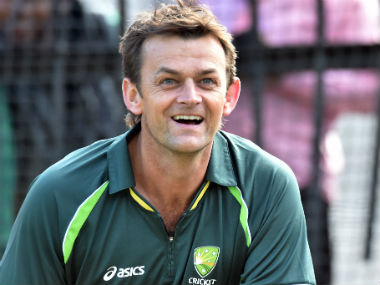
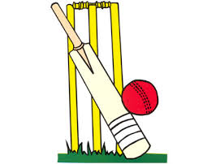

Abraham Benjamin de Villiers (born 17 February 1984), commonly known as AB de Villiers also simply known as ABD, is a former South African cricketer who played for the South African national team.

Adam Craig Gilchrist, (born 14 November 1971), nicknamed "Gilly" or "Churchy", is a former Australian international cricketer and former captain of Australian national team. He is considered to be the greatest wicket-keeper of all time;

Sachin Ramesh Tendulkar( born 24 April 1973) is a former Indian international cricketer and a former captain of the Indian national team, regarded as one of the greatest batsmen of all time.He is the highest run scorer of all time in International cricket.

The website has information received from other sites
Cricket's ensemble cast comes together for a noble cause
The one-off charity game will help raise funds for the refurbishment of five cricket stadia that were damaged by hurricanes Irma and Maria in the Caribbean in 2017
Embattled England seek inspiration to level series>
Meanwhile, the visitors will look to replicate their clinical performance at Lord's to register their first Test series win in England since 1996
No Dawlat Zadran in Afghanistan's squad for inaugural Test
Afghanistan have five spinning options - Rashid Khan, Mujeeb Ur Rahman, Zahir Khan, Hamza Kotak and Mohammad Nabi - in their 16-member squad